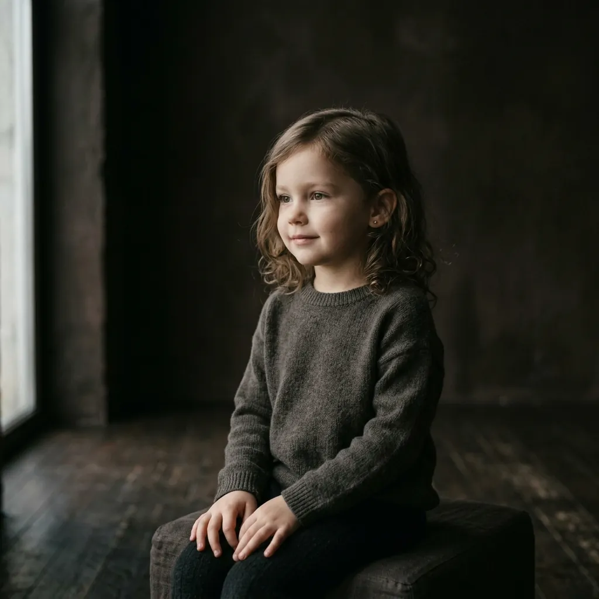
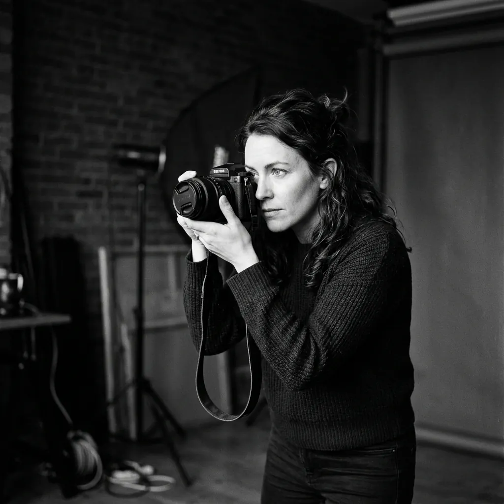

Портрет №01
Студийный свет, ч/б, Nocturne Studio, 2026

Портрет №02
Крупный план, естественный контраст, 2026

Семейный портрет №03
Съёмка в студии, тёплый свет, 2026

Детский портрет №04
Естественный свет, студия Nocturne, 2026

Портрет №05
Документальный стиль, чёрно-белый, 2026

Событие №06
Свадебная съёмка, natural light, 2026

Событие №07
Корпоративный вечер, репортаж, 2026

Продакшн №08
Предметная съёмка, студийный свет, 2026

Продакшн №09
Атмосфера студии Nocturne, 2026

Продакшн №10
Бэкстейдж съёмки, студия Nocturne, 2026

Fashion editorial №11
Съёмка для журнала, студия Nocturne, 2026

Fashion editorial №12
Городская съёмка, вечерний свет, 2026
01 / 12